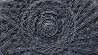
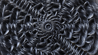

XGen 样条线图案
在本简短教程中，我们将介绍如何使用 XGen 创建一些让人联想到曼荼罗的样条线图案。我们将使用 XGen 样条线基本体的一些属性来创建各种图案，例如下面的示例图像。随后可以为这些样条线属性设置关键帧以创建催眠动画。要查看更多示例，请单击此处。
 |
基础几何体
- 首先，创建一个 NURBS 圆柱体。断开顶部端面的父子关系并删除主圆柱体形状。我们只需要顶部形状应用 XGen 描述。
- 将 NURBS 顶部曲面转化为多边形几何体（XGen 仅适用于多边形几何体）：“修改 -> 将 NURBS 转化为多边形”(Modify -> Convert NURBS to Polygons)。删除原始 NURBS 曲面，仅保留转化的多边形对象，如下所示：
NURBS 圆柱体顶部端面转化为多边形
创建描述
- 选择圆柱体顶部端面几何体后，转到“生成 -> XGen -> 创建描述”(Generate -> XGen -> Create Description)
- 确保选中“样条线(用于长头发、藤等)”(Splines (use for long hair, vines, etc))。将“生成基本体”(Generate the Primitives)更改为“以统一的行和列”(In Uniform rows and columns)，如下图所示。
样条线属性
在 XGen 编辑器中，将“间距”(Spacing)减小为 0.05。这将在圆柱体的 topCap 几何体曲面上创建更多的样条线。
将样条线的“长度”(Length)增加到 2.0 左右。
将样条线的“宽度”(Width)减小为 0.1 左右。
将“锥化”(Taper)增加到 1 左右。“锥化”(Taper)控制每个样条线尖端与底端相比的相对宽度。正值会使尖端窄于底端，而负值会使尖端宽于底端。
将“弯曲 U”(Bend U)值减小到 -1 左右。弯曲控制样条线在对应 CV 上的弯曲程度。0 表示没有弯曲，而 1.0 表示 90 度弯曲。其外观应类似下图：
- 接下来，尝试调整“倾斜”(Tilt)属性。此属性使样条线从曲面法线向外倾斜。
- 现在，尝试调整“弯曲 V”(Bend V)属性。该属性控制样条线在对应 CV 的直角的弯曲程度。0 表示没有弯曲，而 1.0 表示 90 度弯曲。
- 现在，出现了一些有趣的图案。可尝试使用这些样条线属性设置的不同组合，以获得一些有趣且富有创意的效果！
“以统一的行和列”(In Uniform rows and columns)与“随机横跨曲面”(Randomly across the surface)
下面的图像比较了这两种基本体的生成情况。这两种方法的效果都不错，但我发现“以统一的行和列”(In Uniform rows and columns)通常看起来会更好。请尝试使用这两种方法以确定您喜欢哪一种。
| 以统一的行和列(In Uniform rows and columns) | 随机横跨曲面(Randomly across the surface) |
样条线设置示例
下面是一些完成的渲染示例，以及对应的 XGen 样条线基本体属性设置。您可以看到，仅通过调整弯曲和倾斜样条线属性即可获得多种不同的效果。
|  |  | ||
渲染
- 在渲染前，确保将“渲染器”(Renderer)设置为“Arnold 渲染器”(Arnold Renderer)，将“模式”(Mode)设置为“有厚度”(Thick)（带状为平坦曲线，这不是我们想要的）。这些设置位于 XGen“预览/输出”(Preview/Output)选项卡下。为 XGen 集合指定一个着色器，就可以开始渲染了！
批渲染
在进行批渲染前，记得执行以下步骤，否则 XGen 描述将不会渲染：
- 保存场景。
- 选择几何体和 XGen 描述之后，从 XGen 描述菜单中转到“文件 > 导出面片以进行批渲染”**(File > Export Patches for Batch Render)。如果 XGen 描述包含动画，则启用该动画并选择“帧范围”(Frame Range)。确保在“插件管理器”(Plug-in Manager)中加载了 **AbcExport.mll，否则将无法正确导出动画。
- 保存场景。
- 对动画效果满意后，就可以进行批渲染动画了。
总结
有关使用 XGen 样条线渲染图案的简短教程到此结束。还可以尝试使用不同的多边形形状将描述附加到样条线属性，以及向样条线属性添加表达式和颜色。尽情享受 XGen 样条线带来的乐趣吧！